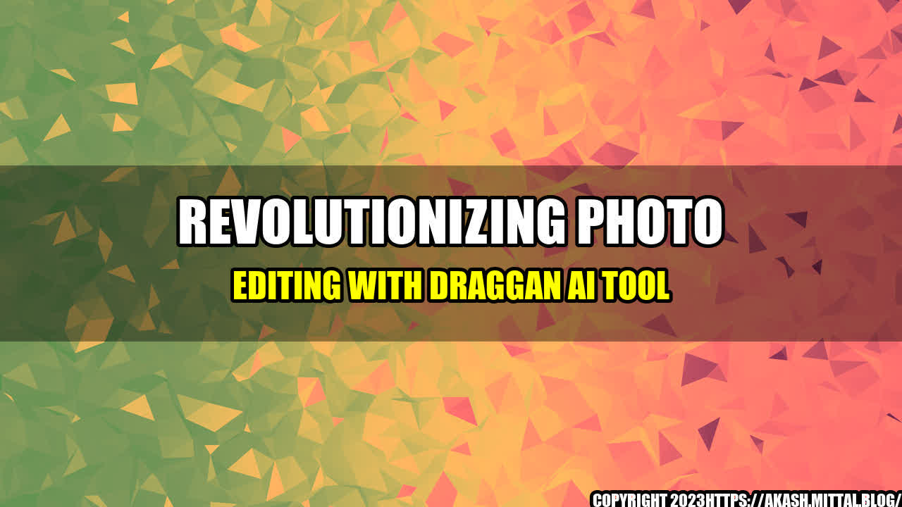

Revolutionizing Photo Editing with DragGAN AI Tool
Anyone who has ever tried their hand at photo editing knows that it can be a time-consuming and often frustrating process. Even the most experienced editors can spend hours manipulating an image to achieve the desired result. But what if there was a tool that could take the guesswork out of photo editing and streamline the process? Enter DragGAN AI Tool, the revolutionary technology that is changing the game for photo editors everywhere.

What is DragGAN AI Tool?
DragGAN AI Tool is an AI-powered platform that offers advanced photo editing capabilities in an intuitive, user-friendly interface. It has been designed to simplify the photo editing process, while also offering users unparalleled creative control. With DragGAN AI Tool, anyone can create professional-quality edits in a matter of minutes, regardless of their previous experience with photo editing tools.
The platform uses a proprietary technology called Generative Adversarial Networks (GANs). GANs are AI models that can learn to generate new data that is similar to a given set of real-world data. In the case of DragGAN AI Tool, GANs are used to analyze images and offer suggestions for how they can be improved. Users simply drag and drop these suggestions onto their images, and the tool does the rest.
How does it work?
Using DragGAN AI Tool is incredibly easy. Simply upload your image to the platform, and the AI will analyze it to identify potential areas for improvement. These could include anything from color correction to skin smoothing to background removal. Once the AI has made its suggestions, you can simply drag and drop them onto your image and watch as the tool does the rest.
One of the most unique features of DragGAN AI Tool is its ability to work in real-time. As you drag and drop different suggestions onto your image, you can see the changes taking place in real-time. This allows you to experiment with different editing techniques and get instant feedback on how each one affects your image.
Why is DragGAN AI Tool so effective?
DragGAN AI Tool is effective for a number of reasons. For one, it has been designed to be incredibly user-friendly. Even if you have never edited a photo before, you will find the platform intuitive and easy to use. The AI-powered suggestions take the guesswork out of editing, allowing you to achieve professional-quality results in a matter of minutes.
Additionally, DragGAN AI Tool offers a level of creativity and control that is unmatched by other photo editing tools. The real-time editing feature allows you to experiment with different techniques and see the results immediately. This means that you can make adjustments on-the-fly and find the perfect edit for your image with ease.
Why should you use DragGAN AI Tool?
There are several reasons why you should consider using DragGAN AI Tool for your photo editing needs.
- #1 Creative Control: DragGAN AI Tool offers a level of creativity and control that is unmatched by other photo editing tools. The AI-powered technology suggests edits that are tailored to your image, allowing you to achieve professional-quality results without having to spend hours tweaking every little detail.
- #2 Simplicity: DragGAN AI Tool makes photo editing easy for everyone, regardless of their level of experience. The intuitive interface and real-time editing features allow you to achieve the perfect edit in just a few minutes.
- #3 Time-saving: Traditional photo editing can be a time-consuming process, but with DragGAN AI Tool, you can achieve professional-quality edits in a matter of minutes. This means that you can spend more time shooting and less time editing.
Overall, DragGAN AI Tool is an innovative platform that is truly revolutionizing the world of photo editing. Its AI-powered technology offers users unparalleled creative control, while also simplifying the editing process. Whether you are a professional photographer or just someone who wants to improve their social media presence, DragGAN AI Tool is an invaluable tool that can help you achieve your goals.
So why not give it a try and see for yourself how it can take your photo editing to the next level?
Curated by Team Akash.Mittal.Blog
Share on Twitter Share on LinkedIn